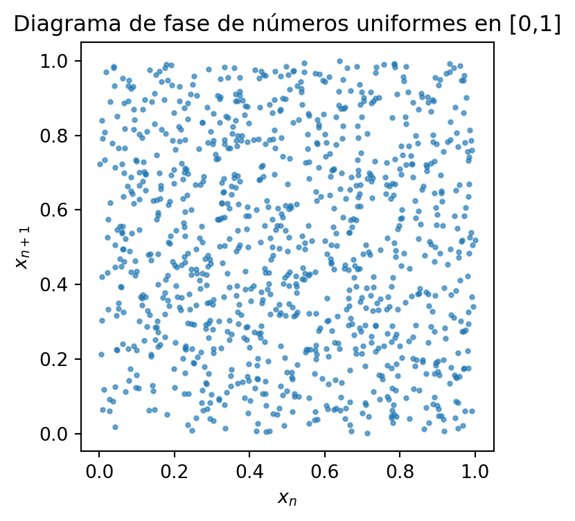

26 Atractores
26.1 Definición del clima
Antes de seguir hablando del clima vamos a ver qué entedemos por el clima. Según la Organización Meteorológica Mundial, el clima se define como la descripción estadística —principalmente la media y la variabilidad— de las variables atmosféricas (temperatura, precipitación, viento, etc.) para un lugar dado durante un periodo de referencia de 30 años, lo cual:
Filtra las variaciones interanuales y anomalías (p. ej. El Niño–Oscilación del Sur).
Permite identificar tendencias y extremos climáticos a largo plazo.
En la actualidad existe otra corriente de científicos para los que la definición del clima está mas relacionada con los sistemas caóticos. Para ellos, el clima no es la distribución de observaciones, sino el atractor de un modelo climático perfecto bajo condiciones externas fijas. Pero, ¿qué es un atractor?
26.2 Atractor
Para ver lo que es un atractor nos vamos a valer de nuevo de nuestro tan útil mapa logístico.
Vamos a ir a la zona caótica del mapa logístico, con \(r=3.9\). Vamos a ver un plot del valor de la sucesión con el tiempo.
Y ahora vamos a hacer lo mismo con números aleatorios que he mandado generar al ordenador con una distribución uniforme entre 0 y 1.
Aparentemente estamos viendo la misma nube de puntos sin ninguna estructura. Pero, ¿qué pasa si representamos \(x_{n+1}\) frente a \(x_n\) ?. El resultado es una zona de puntos que atrae las distintas iteraciones de nuestra secuencia. !!Nos econtramos ante un atractor!!
Si hacemos lo mismo con los números aleatorios entre 0 y 1 el resultado es el siguiente.

NO hay ninguna estructura que atraiga los valores. Estamos ante un conjunto desestructurado de datos.
Volvamos al atractor del mapa logísitico. Uno podría decir que es lógico lo que vemos, ya que los puntos están definidos por la función logística. De hecho, parece que estamos viendo la función logística. Pero hay un detalle: si miras detalladamente verás huecos en la gráfica.¿Por qué el atractor es distinto de la función logística?
- La ecuación logística
\[ x_{n+1} = r\,x_n\,(1 - x_n) \]
es la regla determinista que asigna cada valor \(x_n\) al siguiente. - El atractor es el conjunto de pares \((x_n, x_{n+1})\) en el espacio de fases donde la dinámica termina estabilizándose tras desechar el transitorio. Aunque la función forma una parábola continua, el atractor sólo ocupa las regiones donde los puntos rebotan de forma caótica y no periódica. Estamos por tanto ante un atractor periódico. ¿ Qué tipos de atractores hay en el mapa logístico?
Punto fijo
Todos los orbitantes convergen a un único punto \((x^*,x^*)\). Ejemplo: para \(0 < r < 1\), \(x^* = 0\).Ciclo límite
Oscilaciones periódicas entre un conjunto finito de valores (periodo 2, 4, …). Sucede para \(3 < r < 3.5699\ldots\).Atractor extraño (caótico)
La razón de que el atractor sea “extraño” es que puntos muy próximos en una iteración pueden acabar muy separados en iteraciones posteriores, generando esa mezcla de estabilidad (se quedan en el atractor) y caos (se mueven sin orden aparente), pero siempre dentro de la misma estructura fractal. Para ver la estructura fractal, vamos a hacer zooms sucesivos en \(r = 3.9\).
Como vemos a diferencia de la función logística, el atractor tiene “huecos”, no es continuo en el sentido matemático estricto. Se trata de una constucción extraña. Tras consultarlo a ChatGPT, me confirmó que hay infinitos huecos a cualquier escala. En 1º de Bachillerato decimos que un conjunto de la recta es continuo (o conectado) si para cualesquiera \(a,b\) en él, todo el intervalo \([a,b]\) también está contenido. El atractor fractal no cumple esto: no existe \(\delta>0\) tal que contenga el segmento \([x_0-\delta, x_0+\delta]\) alrededor de un punto \(x_0\). Es decir, todos los puntos tienen huecos alrededor suyos.
Cada valor de \(r\) tiene su propio atractor, tal y como se puede ver en la siguiente figura. Como es lógico, dependiendo del valor de crecimiento de la función logística \(r\), el sistema terminará en un atractor o en otro.
26.3 Otros atractores
Existen otros atractores dentro de los sistemas caóticos. Por ejemplo un péndulo doble con rozamiento acaba siempre en la misma posición (con el péndulo parado justo debajo del eje debido a la pérdida de energía); en este caso el atractor es un punto. Existe otro atractor que es mítico, y que no podría dejar pasar en este proyecto, que es el atractor de Lorenz por todo lo que representa en el estudio de sistemas caóticos y el tiempo. Fue el primero que se describió y describe perfectamente como un sistema caótico puede tener dos estados diferenciados. El sistema pasa de un estado a otro por pequeñas perturbaciones, y puede permanecer en uno de los estados durante bastante tiempo hasta que otra perturbación lo saca de ahí y lo lleva hacia el otro estado. Las ecuaciones de Lorenz se hallan totalmente fuera del alcance de lo que puedo entender con mi nivel de matemáticas, pero su funcionamiento resulta fácil de comprender una vez que se muestra la gráfica con el estado del sistema en función del tiempo. Le pedí a ChatGPT que me hiciese una simulación del atractor del Lorenz y este fue el resultado

Haciendo paralelismos con el atractor del mapa logístico, en este caso, en lugar de puntos separados, lo que tenemos son líneas separadas. Es decir, ninguna de las líneas que van trazándose vuelve a pasar por encima de otra. Esto ya lo vimos en las simulaciones y experimentos con el péndulo: ninguna de las trayectorias del péndulo pasa por encima de otra.
¿Y por qué es relevante desde el punto de vista del clima el atractor de Lorenz?. Porque nos ilustra como un sistema caótico puede alternar entre dos estados, y pasar de uno a otro por pequeñas perturbaciones. Por lo tanto, vemos aquí una explicación, una demostración de lo que esta segunda definición del clima es desde el punto de vista de un sistema caótico. El clima actual, es el estado actual en el que el sistema caótico que conforma el clima está ahora mismo. Y solamente desde la perspectiva de los sistemas caóticos podemos reconocer que el paso de un estado a otro puede deberse a muy pequeñas perturbaciones, o “tipping points”, que nos pueden llevar a un clima totalmente diferente al que tenemos en la actualidad. Obviamente, hay que tener en cuenta que el clima es un sistema caótico con un estado multidimensional, que depende de múltiples variables que conforman este espacio multidimensional. Por lo tanto, sin más dilación, veremos en la siguiente sección los últimos cambios que se han producido en el clima y por qué han sido causados.